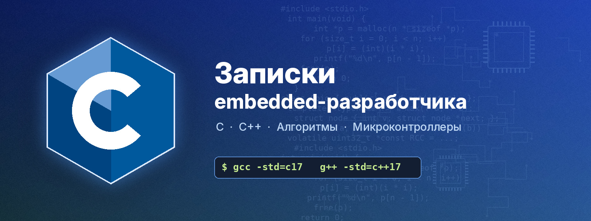

Записки embedded-разработчика
Это уже не только справочник по C. Здесь собраны четыре темы, которые нужны embedded-разработчику: язык C (C11/C17), введение в C++17, общие вопросы (алгоритмы, структуры данных, FAQ) и задел под программирование микроконтроллеров.
Примеры на C компилируются командой gcc -std=c17 -Wall -Wextra,
примеры на C++ — командой g++ -std=c++17 -Wall -Wextra без предупреждений.
C
Синтаксис, типы, указатели, память, стандартная библиотека и законченные примеры. Начните с обзора языка C или сразу откройте нужную тему.
C++
Возможности C++17, которых нет в C: ссылки, классы, наследование, шаблоны, исключения. Обзор раздела — на странице Язык C++. Стандартная библиотека шаблонов (STL) будет добавлена позже.
Общие темы
То, что не привязано к одному языку: оценка сложности, поиск и сортировки, рекурсия, простые структуры данных и FAQ. Полный обзор — в разделе Общие темы.
Микроконтроллеры
Раздел ещё готовится. Пока здесь заглушка; позже появятся материалы по периферии, прерываниям и типичным приёмам работы с железом.
О сайте
Сайт сделан как индивидуальный проект к лабораторной работе 2.1 «Настройка CDN для статического веб-сайта».
Это набор однотипных HTML-страниц с общей таблицей стилей style.css, локальным подсветчиком
синтаксиса (Prism, лицензия MIT) и локальным шрифтом JetBrains Mono
(SIL Open Font License). Внешних CDN-зависимостей нет, поэтому весь
трафик идёт с Origin-сервера и удобно анализируется в Cloudflare: HTML-страницы дают высокий Cache Hit Ratio,
а шрифты, CSS и JS подходят для долгого TTL.